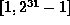
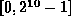
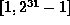
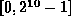
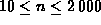
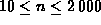
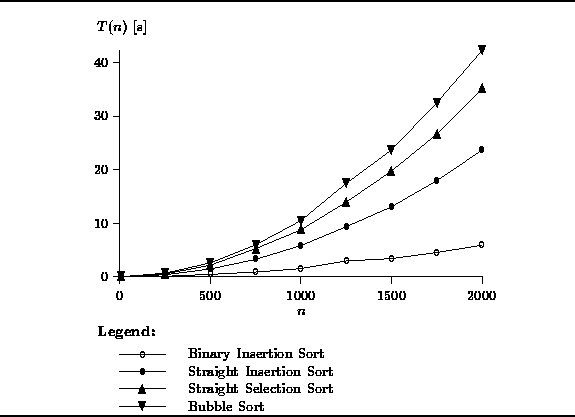
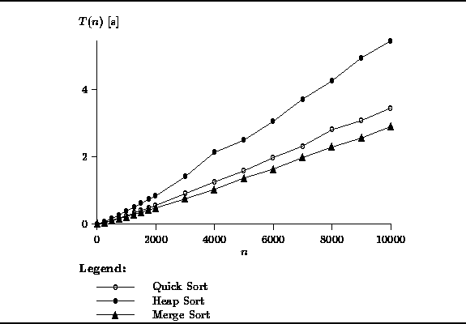
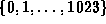
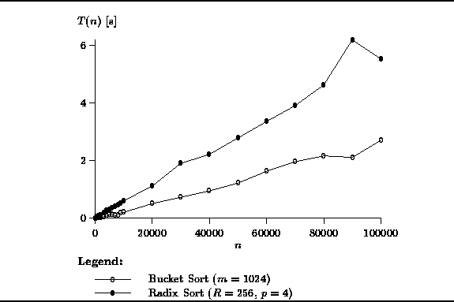

Data Structures and Algorithms
with Object-Oriented Design Patterns in Java
Data Structures and Algorithms
with Object-Oriented Design Patterns in JavaIn order to better understand the actual performance of the various sorting algorithms presented in this chapter, it is necessary to conduct some experiments. Only by conducting experiments is it possible to determine the relative performance of algorithms with the same asymptotic running time.
To measure the performance of a sorting algorithm,
we need to provide it with some data to sort.
To obtain the results presented here,
random sequences of integers were sorted.
That is, for each value of n,
the RandomNumberGenerator class defined in Section  was used to create a sequence of n integers.
In all cases (except for bucket sort)
the random numbers are uniformly distributed
in the interval .
For the bucket sort the numbers are uniformly distributed in .
was used to create a sequence of n integers.
In all cases (except for bucket sort)
the random numbers are uniformly distributed
in the interval .
For the bucket sort the numbers are uniformly distributed in .
Figures , and show the actual running times
of the sorting algorithms presented in this chapter.
These running times were measured on a Sun SPARCstation 5,
Model 85, which has an 85 MHz clock and 32MB RAM
under the Solaris 2.5 operating system.
The programs were compiled using the Solaris Java Platform 1.1
compiler (javac)
and run under the Java interpreter (java).
The times shown are user CPU times, measured in seconds.
Figure shows the running times of the  sorts
for sequences of length n, .
Notice that the bubble sort has the worst performance
and that the binary insertion sort has the best performance.
Figure clearly shows that, as predicted,
binary insertion is better than straight insertion.
Notice too that all of the
sorts
for sequences of length n, .
Notice that the bubble sort has the worst performance
and that the binary insertion sort has the best performance.
Figure clearly shows that, as predicted,
binary insertion is better than straight insertion.
Notice too that all of the  sorts require more than 5 seconds
of execution time to sort an array of 2000 integers.
sorts require more than 5 seconds
of execution time to sort an array of 2000 integers.

Figure: Actual running times of the  sorts.
sorts.
The performance of the  sorts is shown in Figure .
In this case, the length of the sequence varies between n=10
and .
The graph clearly shows that the
sorts is shown in Figure .
In this case, the length of the sequence varies between n=10
and .
The graph clearly shows that the  algorithms are significantly
faster that the
algorithms are significantly
faster that the  ones.
All three algorithms sort 10000 integers in under 5 seconds.
Clearly, merge sort is the best of the three,
with quicksort not that far behind.
ones.
All three algorithms sort 10000 integers in under 5 seconds.
Clearly, merge sort is the best of the three,
with quicksort not that far behind.

Figure: Actual running times of the  sorts.
sorts.
Figure shows the actual running times for the bucket sort
and radix sort algorithms.
Both these algorithms were shown to be O(n) sorts.
The graph shows results for n between 10 and .
The universe used to test bucket sort was .
That is, a total of m=1024 counters (buckets) were used.
For the radix sort, 32-bit integers were sorted by using the radix R=256
and doing p=4 sorting passes.

Figure: Actual running times of the O(n) sorts.
Clearly, the bucket sort has the best running time. For example, it sorts 100000 10-bit integers in about 3 seconds. Radix sort performs extremely well too. It sorts 100000 32-bit integers in about 7 seconds, roughly a factor of two slower than the bucket sort.
 Copyright © 1998 by Bruno R. Preiss, P.Eng. All rights reserved.
Copyright © 1998 by Bruno R. Preiss, P.Eng. All rights reserved.